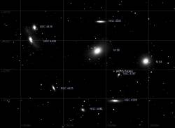

Version 3 alpha 0.0.7
Improved star display and picture database.
 Improved star display
Improved star display
The star can now be displayed using a parametric method to achieve the best rendering for your screen or personal preference.
You can choose for big or small stars, high or low contrast between magnitude, colorful or gray scale.
Four default setting can be used as a starting point.
Use the Configuration - Display to change this setting.
This method use anti-alias to obtain sub-pixel accuraty for the position of the star.
Thank's to John Valentine for is contribution to this function.
 Picture database
Picture database
The program can now display any number of picture in FITS format with WCS information.
Three options are available :
- Show a single image using Configuration - Picture - Background.
- Show any number of image by placing them in data/pictures/other/ folder. Any FITS image in this folder is show if a chart is draw at the corresponding coordinates.
- Show a picture for every object in the SAC database with the exception of dark nebulae and galaxy cluster. Install the skychart_picture package that contain the 9894 files. This is installed to the data/pictures/sac/ folder.
 For all this function it is necessary to have the MySQL database installed.
{kind=link}
If not already done, please install the MySQL package and go to Setup - Configuration - System to create a database. The default options must be right for a new MySQL installation, just press the “Create Database” button.
After installation of the pictures go to Setup - Configuration - Pictures - Object then click “Scan Directory” to register the images in the program.
Repeat this operation after every change to the picture folder.
 Double and Multiple Stars
Double and Multiple Stars
The program use now a more accurate display for the multiple stars.
When the chart scale is sufficient to seperate the component, the line are draw to the exact position of the second component.
For multiple stars each pair referenced in the WDS catalog is represented.
It is necessary to update the WDS catalog to the latest version that contain much improved star position to take advantage of this function.
Other change
- Milky Way color can now be changed from the Color menu.
- User data are now separated from the program directory also for Windows users. The cartesduciel.ini file that contain your prefered setup and any file you need to change are now in folder MyDocuments\Cartes du Ciel. This allow to use all the functionality of the software for users with no administrative privilege.